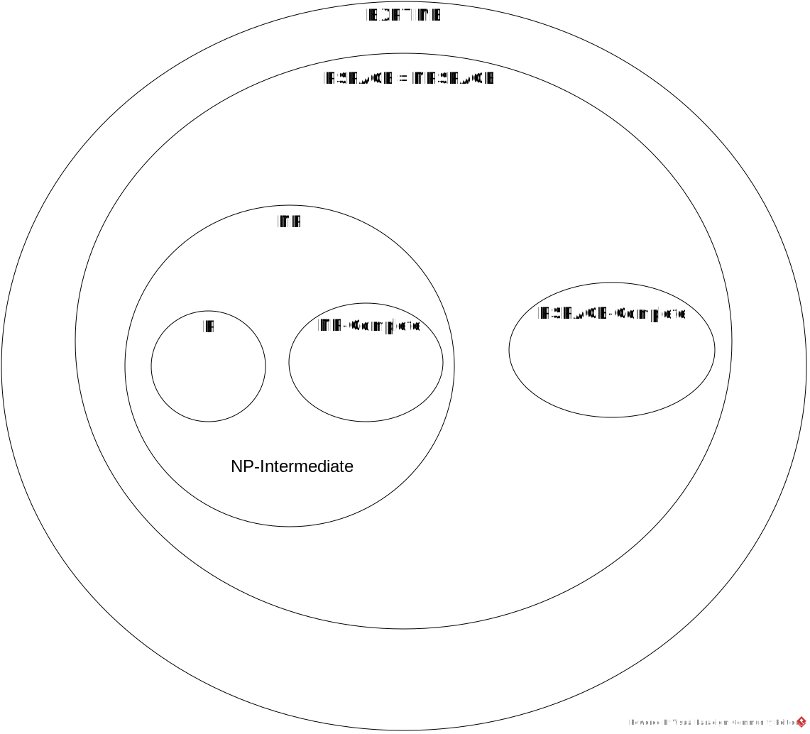

P: the class of problems that can be decided by deterministic Turing machines in polynomial time
NP: the class of problems that can be decided by nondeterministic Turing machines in polynomial time
NP-Complete: the subclass of NP problems to which all NP problems reduce in polynomial time
NP-Intermediate = NP − (P ∪ NP-Complete)
PSPACE: the class of problems that can be decided by deterministic Turing machines in polynomial space
NPSPACE: the class of problems that can be decided by nondeterministic Turing machines in polynomial space
PSPACE-Complete: the subclass of PSPACE problems to which all PSPACE problems reduce in polynomial time
EXPTIME: the class of problems that can be decided by deterministic Turing machines in exponential time
In the following,
X ⊂ Y means X is a proper subset of Y, i.e., X ⊆ Y but X ≠ Y.
Proven Facts
P ⊆ NP ⊆ PSPACE = NPSPACE ⊆ EXPTIME
P ≠ EXPTIME
Conjectures
P ⊂ NP ⊂ PSPACE ⊂ EXPTIME
P ∩ NP-Complete = ∅
NP-Intermediate ≠ ∅
NP ∩ PSPACE-Complete = ∅